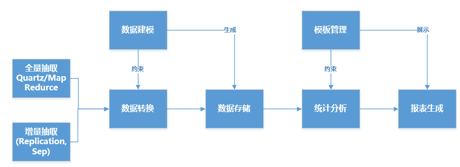

OLAP基本概念
联机分析处理（On-Line Analytical Processing，OLAP）
联机分析处理的概念最早是由关系数据库之父爱德华·库德（E·F·Codd）博士于1993年提出的，是一种用于组织大型商务数据库和支持商务智能的技术。OLAP 数据库分为一个或多个多维数据集，每个多维数据集都由多维数据集管理员组织和设计以适应用户检索和分析数据的方式，从而更易于创建和使用所需的数据透视表和数据透视图。
维（Dimension）
是人们观察数据的特定角度，是考虑问题时的一类属性，属性集合构成一个维（时间维、地理维等）。
维的层次（Level）
人们观察数据的某个特定角度（即某个维）还可以存在细节程度不同的各个描述方面（时间维：日期、月份、季度、年）。
维的成员（Member）
维的一个取值，是数据项在某维中位置的描述。（“某年某月某日”是在时间维上位置的描述）。
度量（Measure）
多维数组的取值。（2000年1月，上海，笔记本电脑，$100000）。
指标（Quota），补充
可度量的属性。一般为某种值，如费用，入院人次。
典型操作
OLAP的基本多维分析操作有钻取（Drill-up和Drill-down）、切片（Slice）和切块（Dice）、以及旋转（Pivot）等。
钻取
是改变维的层次，变换分析的粒度。它包括向下钻取（Drill-down）和向上钻取（Drill-up）/上卷(Roll-up)。Drill- up是在某一维上将低层次的细节数据概括到高层次的汇总数据，或者减少维数；而Drill-down则相反，它从汇总数据深入到细节数据进行观察或增加新维。
切片和切块
是在一部分维上选定值后，关心度量数据在剩余维上的分布。如果剩余的维只有两个，则是切片；如果有三个或以上，则是切块。
旋转
是变换维的方向，即在表格中重新安排维的放置（例如行列互换）。
ElasticSearch
Apache Lucene™可能是目前存在的，不论开源还是私有的，拥有最先进，高性能和全功能搜索引擎功能的库。但Lucene是很复杂的。 Elasticsearch是一个使用Java编写的开源的搜索引擎，它的内部使用 Lucene 做索引与搜索，但是它的目标是使全文检索变得简单， 通过隐藏 Lucene 的复杂性，取而代之的提供一套简单一致的 RESTful API。
然而，Elasticsearch不仅仅是 Lucene，并且也不仅仅只是一个全文搜索引擎。 它可以被下面这样准确的形容：
- 一个分布式的实时文档存储，每个字段可以被索引与搜索
- 一个分布式实时分析搜索引擎
- 能胜任上百个服务节点的扩展，并支持PB级别的结构化或者非结构化数据
Elasticsearch将所有的功能打包成一个单独的服务，这样你可以通过程序去访问它提供的简单的RESTful API服务， 不论你是使用自己喜欢的编程语言还是直接使用命令行。
Elasticsearch是一个实时的分布式搜索分析引擎， 它能让你以一个之前从未有过的速度和规模，去探索你的数据。 它被用作全文检索、结构化搜索、分析以及这三个功能的组合：
- Wikipedia 使用 Elasticsearch 提供带有高亮片段的全文搜索，还有 search-as-you-type 和 did-you-mean 的建议。
- 卫报 使用 Elasticsearch 将网络社交数据结合到访客日志中，实时的给它的编辑们提供公众对于新文章的反馈。
- Stack Overflow 将地理位置查询融入全文检索中去，并且使用 more-like-this 接口去查找相关的问题与答案。
- GitHub 使用 Elasticsearch 对1300亿行代码进行查询。
ES文档和多维数据集
ES的存储结构
ES文档通过JSON格式来表示。文档是可以被索引的基本单元，文档需要索引需要指定类型。ES能支持索引的数据类型有，其中的数组类型，对象类型和内嵌类型的支持，使得ES能存储更复杂的文档。
多维联机分析处理（MOLAP）
MOLAP将OLAP分析所用到的多维数据物理上存储为多维数组的形式，形成“立方体”的结构。维的属性值被映射成多维数组的下标值或下标的范围，而总结数据作为多维数组的值存储在数组的单元中。由于MOLAP采用了新的存储结构，从物理层实现起，因此又称为物理OLAP（PhysicalOLAP）；而 ROLAP主要通过一些软件工具或中间软件实现，物理层仍采用关系数据库的存储结构，因此称为虚拟OLAP（VirtualOLAP）。
我们可以看到基于复杂数据类型（Complex datatypes）构建的ES文档与MOLAP的概念是非常接近的，利用ElasticSearch的聚合的能力，我们能相对简单的实现OLAP框架。
方案
要实现整个OLAP框架主要需要处理以下几个环节
- 数据建模
- 数据ETL
- 数据分析
- 数据展示
大致思路如下：

数据建模
数据建模就是建立多维数据集的过程，同时为了能更有效的利用ES的索引，不建议过深的JSON层次，所以对应到维度建模时采用的是星形模式。
正常情况，是先进行数据建模，之后才能进行数据ETL，首先需要知道抽取的源数据的结构，即数据元数据之后，才能进一步分析数据模型。对于ES来说，实际上就是建立Index/Type的过程。
维度管理
元数据管理
元数据管理维护了原始数据的元数据结构，简单来说就是原始数据有哪些库，哪些表，表之间有什么关系。
映射管理
映射管理是指定了需要抽取的数据范围及方法和确定了多维数据集的模型。
数据ETL
正常情况，是先进行数据建模，之后才能进行数据ETL，而实际过程中，是一般需要知道源数据的结构，即数据元数据之后，才能进一步分析数据模型。
数据ETL，实质就是从各个数据源提取数据，对数据进行转换，并最终加载填充数据到数据仓库维度建模后的表中。只有当多维数据集被填充好，ETL工作才算完成。
数据加载主要分为两种，一种是首次加载，一种是刷新加载（增量加载）。当前产品中主要涉及两种数据库，Mysql和Hbase。
首次加载
通过Quartz Job或MapRedurce Job将数据转换为Kafka消息，由数据加载组件来进行数据处理。
刷新加载
通过扩展mysql-binlog-connector-java和HBase Side-Effect Processor，可以实现数据的实时增量更新。本方案中通过Kafka消息中间件来统一转发不同类型的数据更新，此处需要定义好Kafka的消息格式，以便数据加载组件能较简单的处理数据。
数据转换
转换步骤主要是指对提取好了的数据的结构进行转换，以满足目标数据仓库模型的过程。此外，转换过程也负责数据质量工作，这部分也被称为数据清洗(data cleaning)。转换过程可以通过逐步实现转换算法，动态上线的方式进行。
统计分析
统计分析其实就是从事实表中统计任意组合维度的指标，也就是过滤、分组、聚合，其中，聚合除了一般的SUM、COUNT、AVG、MAX、MIN等，还有一个重要的COUNT(DISTINCT)。ElasticSearch本来就是做实时搜索的，过滤自然不是问题，现在也支持各种聚合以及Pipeline aggregations（相当于SQL子查询的功能）。
统计分析是根据模板配置和页面操作时的条件生成ES语法，执行语法，返回结果数据的过程。从表面看，该过程不难，然而为了生成的ES语法的准确性，ES语法的生成引擎是非常重要的一个环节，通过在模板管理来增加一些配置来辅助ES的语法生成，如行维度，列维度，维的层次等等。
数据展示
通过模板的动态配置，利用Echart和Vue可以实现，动态布局和各种仪表盘的展示，这部分内容也可参看Kibana。
小结
ES的文档结构符合MOLAP的概念，它提供的聚合功能可以实现OLAP的各种操作，基于Lucene和分布式架构在性能上也能得到保障。通过定义一定的规则和开发一系列的辅助功能，可比较容易的实现一套通用的实时OLAP的框架。本文主要讲解的是基于ES构建OLAP框架的思路，而非完整的构建方案。
参考连接
- 联机分析处理
- Elasticsearch Basic Concepts
- https://www.elastic.co/products/hadoop
- Hbase Indexer SEP
- 使用ElasticSearch作为大数据平台的实时OLAP框架
- https://blog.csdn.net/fighting_one_piece/article/details/51765383
- https://yq.aliyun.com/articles/575991
- Mapping Types